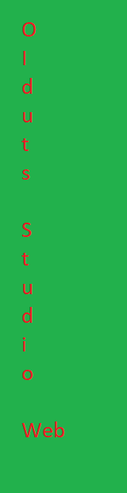

Oiduts Studio - Historia
Historia
xmelonek123: Pewnego styczniowego dnia 2023 roku postanowiłem stworzyć grę o nazwie "pogromcy mitycznych potworów". Zacząłem i nie dokończyłem... niestety gdzieś w lipcu robiłem hard reset komputera i wersja przepadła. Zrobiłem nową lecz nie wiem gdzie jest jej projekt. Na szczęście pozostał plik exe gry, który udostępnimy wkrótce. Obecnie pracuję nad tą grą i wyjdzie w grudniu 2024 lub w lipcu 2025. Wracając to pomysł na studio przyszedł mi sam, a grupę założyłem w maju (GameJolt) i w czerwcu (Komunikator) 2023. Mamy na celu też stworzyć horror point-n'-click, który nazwaliśmy FNaC(Four Night's at Corpy's) ale o tej grze opowiem gdy będziemy ją tworzyć. Na początku 2024 robiłem również grę o nazwie "Codename; PistolShot" czyli strzelanka FPS, ale muszę jeszcze się poduczyć C#.
